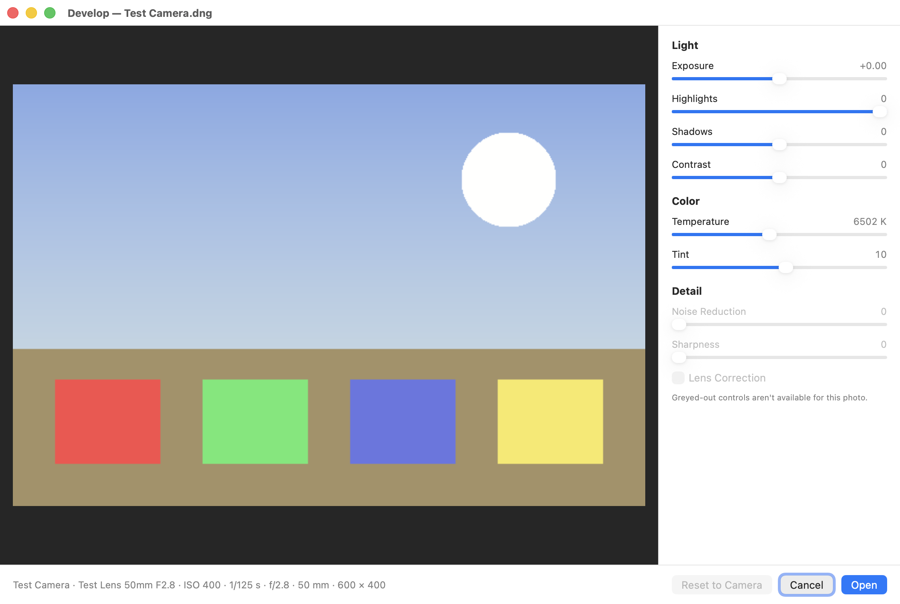

Quick fixes for a dark, tilted or cluttered photo. Everything here works on your Mac, and each
fix is one step you can undo.
Most of these change the selection if there is one, or else the active layer.
Adjust Photo
Adjustments ▸ Adjust Photo… opens a panel at the side with the sliders you'd find in the iPhone's Photos app: Exposure, Brilliance, Dehaze, Highlights, Shadows, Contrast, Brightness, Whites, Black Point, Saturation, Vibrance, Warmth, Tint, Sharpness, Definition, Texture, Noise Reduction and Vignette.
The sliders are in three sections, Light, Color and Detail. Click a section's name to fold it away or open it again. Colorbee remembers which sections you folded.
To move a slider, drag its knob, or drag sideways anywhere on its name line, which is easier to catch.
Auto looks at the photo and sets the light, color and white balance for you. The sliders it moved are marked, and you can fine-tune any of them.
Dehaze takes off a veil of haze, bringing back contrast and color in a hazy or misty photo; dragged left, it adds haze.
Texture brings out fine detail, such as grass, bark or fabric, without the glow along edges that Definition gives; dragged left, it smooths it, which softens skin.
Whites brightens or dims only the brightest parts. Auto raises it when a photo's brightest parts don't reach white.
Warmth and Tint fix a color cast: cooler to warmer, and green to magenta. Or click the eyedropper beside Warmth, then click something in the picture that should be gray, such as a white wall or a gray card: Warmth and Tint are set for you. A very strong cast may need more than they can give. Esc turns the eyedropper off.
Vibrance boosts dull colors more than bright ones, so skin stays natural.
Filters such as Vivid, Dramatic, Mono and Noir each have an intensity slider. Save as Filter… keeps your own settings as a filter: the light and color sliders (Dehaze too) and the vignette. Sharpness, Definition, Texture and Noise Reduction stay out, since they depend on each photo's own detail. At half intensity, every setting in the filter goes halfway.
Color Mixer (under Color) changes one color at a time: choose Hue, Saturation or Luminance, then drag the slider for Red, Orange, Yellow, Green, Aqua, Blue, Purple or Magenta. Colors in between change partly, and grays never change. Darken a blue sky with Blue's Luminance, or calm a green cast in foliage with Green's Saturation.
Black & White, at the top of the Color Mixer, turns the picture to gray. The eight sliders then set how light each color becomes: drag Red up to brighten red things in the gray picture.
Point Color changes one exact color you pick, such as a jacket or a sign: click its eyedropper, then the color in the picture, and use its Hue, Saturation and Luminance. Range sets how close a color must be to count; hold the Range slider to see what it touches, with everything else gray. Pick up to eight colors; click a swatch to adjust it again, or the minus button to remove it.
Color Grading tints the shadows, midtones and highlights separately, or the whole picture (Global): choose a tab, then drag the point on the wheel toward a color; farther out is stronger. Teal shadows with orange highlights is a classic film look. Luminance lightens or darkens those tones; Blending sets how much the three overlap, and Balance moves where shadows end and highlights begin. Option-drag moves the point finely, and a double-click puts it back in the middle. It also tints a picture made Black & White, for split toning.
Use a look again. Adjustments ▸ Adjust Photo: Same as Last applies the settings you last used, even after quitting. To carry a look to another picture, click Copy Settings (the two-page button beside Auto, or Adjustments ▸ Copy Photo Settings on an Adjust Photo layer), then Paste Settings on the other picture: Adjust Photo opens with the settings in place, so you see them before you apply. Paste Photo Settings as Adjustment Layer adds them as a layer instead. Copied settings don't replace a picture you copied.
For a change you can keep tweaking later, use Adjust Photo as an adjustment layer instead (Layer ▸ New Adjustment Layer). See Work with layers.
Levels, Curves and Auto Contrast
Auto Contrast stretches the darkest pixels to black and the lightest to white, in one click. Good for a washed-out photo or scan.
Levels… sets the black point, white point and midtones, with a histogram. Auto sets them from the image.
Curves… reshapes the tones with points you drag, for all colors at once or one at a time.
Straighten, perspective and crop
Image ▸ Straighten… turns the image a little, to level a horizon or a crooked scan. Drag the slider, or draw a line along something that should be level. Crop to fit trims the empty corners.
Image ▸ Perspective Correction… squares up a photo of a whiteboard, a document or a building. Drag the four corners onto what should be a rectangle, then press Return.
Image ▸ Crop… crops with a box you drag, free or in a set shape.
Subjects and backgrounds
Image ▸ Remove Background makes everything but the subject transparent, with soft edges.
Layer ▸ Lift Subject to New Layer copies the subject onto its own layer, leaving the photo as it is. The Layers panel opens to show the new layer, and the photo's layer stays chosen, so you can lift one thing after another.
Edit ▸ Select Subject selects the subject, with a soft edge, so you can change just it, or just the background after Edit ▸ Invert Selection.
Each of these asks you to click the one you want, or press Return for all it found. If what you want is small or wasn't noticed, such as a character in a game screenshot, click it anyway: Colorbee looks closer around your click. When it finds no subject at all, it asks you to click one, and looks for it the same way.
Retouch: remove things and touch up spots
Click Retouch in the toolbar (or press J) and choose a tool from the gallery. The palette bar shows a tip for each one.
Tool
What it's for
Remove
Paint over something and let go: it's filled from its surroundings. Best on simple backgrounds such as sky, walls, sand, grass and the flat parts of screenshots. Esc stops a large fill.
Spot Heal
Click a speck of dust or a blemish, or brush over a thin scratch.
Clone Stamp (S)
Option-click where to copy from, then paint. Best for busy spots where Remove smears, such as leaves, bricks and edges.
Lighten and Darken
Brighten or deepen just where you paint. Range picks Shadows, Midtones or Highlights.
Saturate and Desaturate
Make colors more or less vivid where you paint.
Blur and Sharpen
Soften or crisp up where you paint.
Smudge
Drag colors along, like a finger through wet paint.
Strength (the brushes and Smudge) and Hardness (all but Remove and Spot Heal) are in the palette bar. Going over the same place in one stroke doesn't add up; a new stroke adds more.
Keep the original safe: add an empty layer above the photo and turn on Sample All Layers (Remove, Spot Heal and Clone Stamp). The fixes go on the new layer, and the photo stays untouched.
Using the Clone Stamp
The Clone Stamp copies one part of the picture onto another as you paint. It's like painting with a brush that picks up a different spot.
Option-click a clean spot that looks like what should be there, such as plain sky next to a wire. A crosshair marks it.
Paint over the thing to hide. Where you start painting lines up with the spot you Option-clicked. As you move, the crosshair moves with you, showing what's being copied.
If it starts copying the wrong thing, let go, Option-click a new clean spot, and paint again.
Aligned (on at first): every stroke keeps the same distance from what it copies, so you can paint in several short strokes. Turn it off to start from the Option-clicked spot again on every stroke.
Match Tone: blends the copy's brightness and color into what's around it, for when the clean spot is a little lighter or darker. It's for patching like with like, such as sky over sky or skin over skin. To copy an object, such as the moon or a person, turn it off: Match Tone would recolor the object to match where you put it.
Pick a clean spot close by, and a soft brush (low Hardness), and the patch blends in best.
Red-eye
Choose Adjustments ▸ Remove Red-Eye. Colorbee finds the eyes and turns red pupils dark, keeping the little highlight. If it doesn't find them (a pet, or a face turned away), select the red pupils first and choose it again: it fixes the red inside the selection.
RAW photos
Colorbee opens the RAW files macOS can read, from Canon, Sony, Nikon, Fujifilm and DNG cameras. Each one opens in the Develop window first.

The Develop window.
Every slider starts at the camera's own setting. Reset to Camera goes back to them.
Highlights only goes down, to bring back bright skies. To brighten, use Exposure.
Some cameras' files don't support every control; those are greyed out.
Develop before you open. The Develop window works with the full detail of the RAW file. After opening, the photo is an ordinary image, so big changes to light and color are best made here.
Press Return to open the photo. It opens as an untitled copy, and the RAW file is never changed. To develop it differently, open the RAW file again.
Camera details
Photos from a camera or phone keep their camera, lens, ISO, shutter speed, aperture, focal length and date taken. They're written to an exported file only if you turn on Include camera details in File ▸ Export…. Colorbee never keeps the location, serial numbers or the owner's name. View ▸ Info (⌥⌘I) shows a photo's camera details.